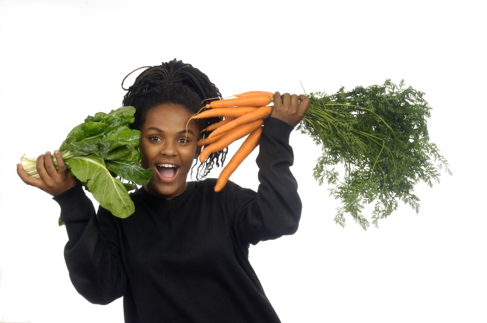

The four phases
One cycle, four hormonal environments. Each asks something different of your plate.
Replenish and rest
Oestrogen and progesterone are at their lowest, and blood loss draws down iron stores. The research supports iron rich foods paired with vitamin C for absorption, and omega 3 fats, which randomised trials link to measurably less menstrual pain.
Think: leafy greens, beans, fish, citrus, ginger tea.

Build and energise
Oestrogen climbs and energy returns. Your body is building the uterine lining and preparing to ovulate. Studies point to fermented foods for gut health, and cruciferous vegetables whose compounds support healthy oestrogen metabolism.
Think: vegetables in variety, eggs, fermented grains, seeds.

Peak and protect
Oestrogen peaks and inflammation sensitivity rises with it. The evidence favours antioxidant rich foods and fibre, which supports the gut's clearance of the oestrogen surge once it has done its work.
Think: berries, peppers, whole grains, plenty of water.

Nourish and calm
Progesterone rises, insulin sensitivity dips, and cravings follow. Clinical studies link magnesium and vitamin B6 to steadier mood and fewer premenstrual symptoms, and complex carbohydrates keep blood sugar level when it matters most.
Think: dark chocolate, bananas, sweet potato, nuts, whole grains.